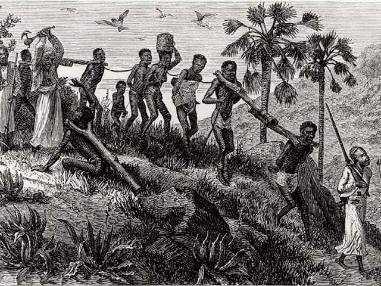
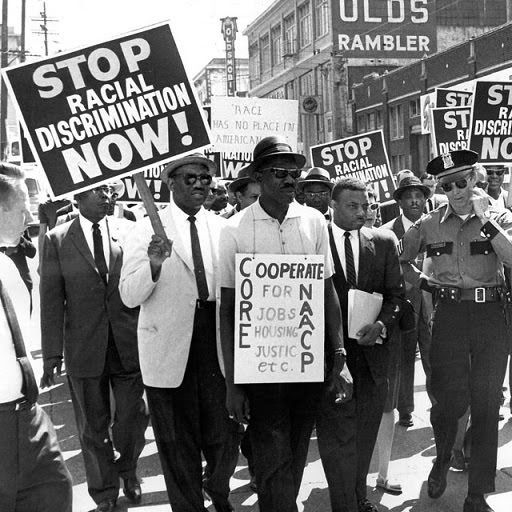

Timeline: History of Racism
This timeline highlights key moments that shaped the history of racism across centuries. Each event is represented with an image. Hover over the images to reveal more details and context.



